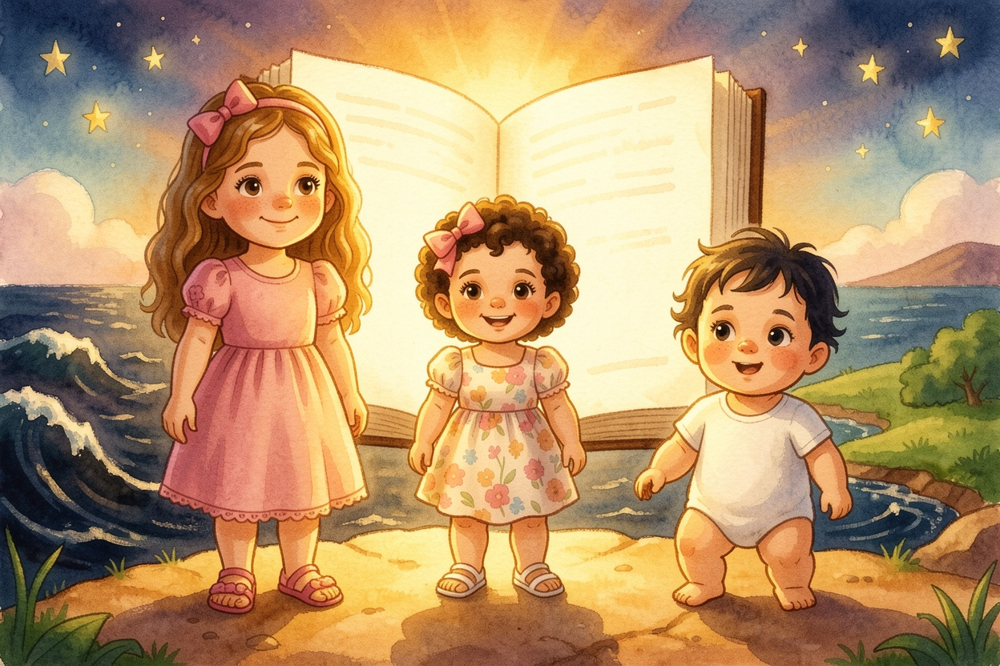
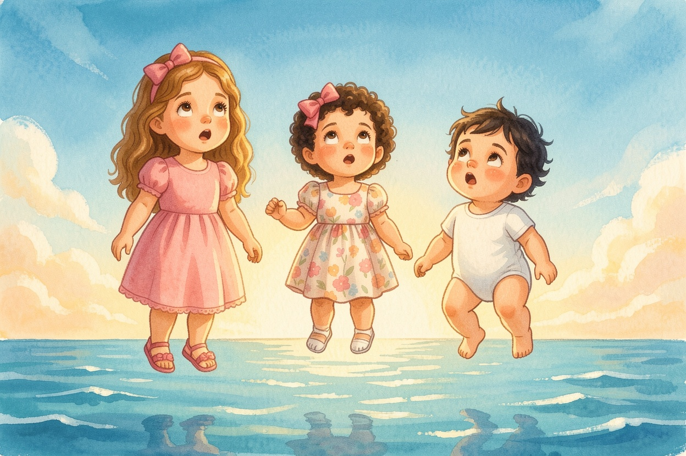
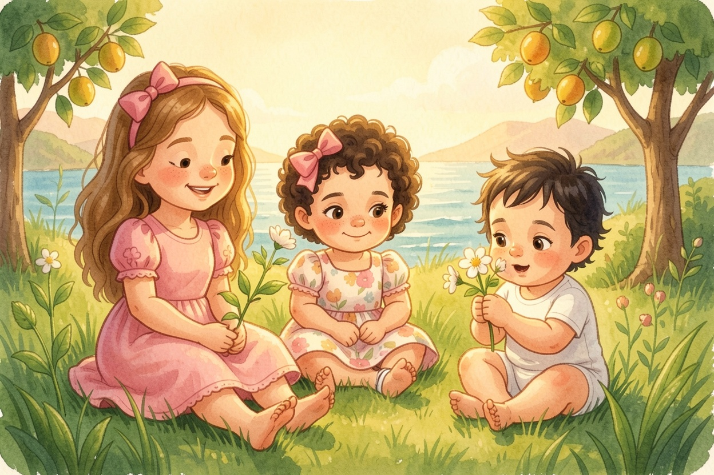
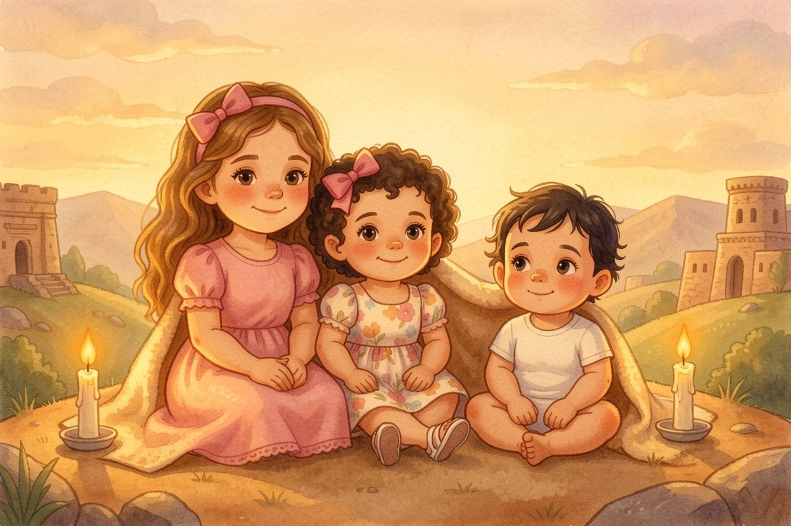
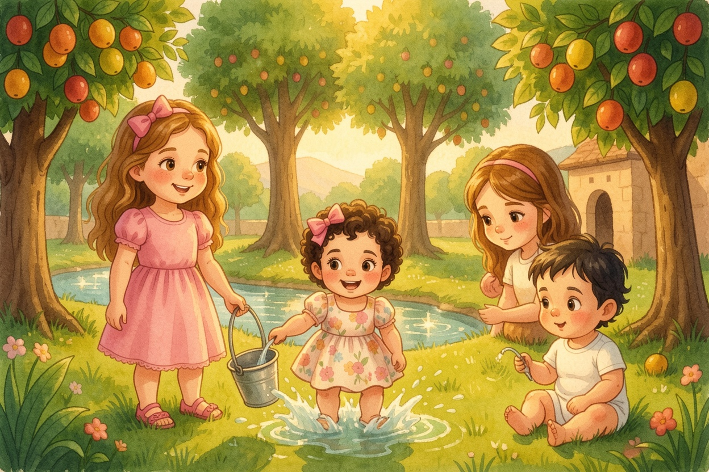
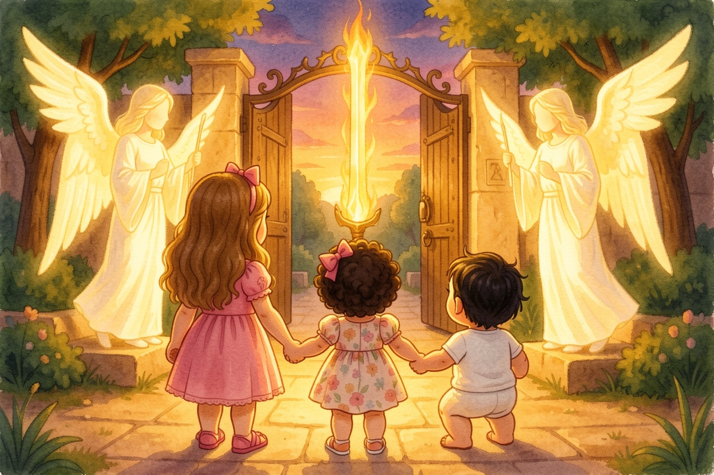

A Parasha Book · Parashat Bereshit
בְּרֵאשִׁית
In the Very Beginning
starring Aviya, Tzofia & Lielle
Meet the explorers
Aviya, Tzofia & Lielle are about to climb into Parashat Bereshit (Genesis 1:1–6:8).
Everything they see on these pages comes straight from the pesukim — the plain meaning, the peshat.
Each picture page is followed by the words of the Torah it comes from, in Hebrew and English, and a question to look for in the text.
Bereshit 1:1-2In the Very Beginning
It was Friday night, and the Chumash on the Shabbat table was glowing. Aviya opened it to the very first page — and the room melted away. The three sisters were floating in a deep, quiet dark. There was no floor and no sky, only water, dark and deep. Tzofia squeezed her sister's hand. Lielle blinked her big eyes. "Where are we?" Aviya whispered, and read the first words: the earth was empty and unformed, darkness was over the deep, and the spirit of God was hovering over the water.
Look closely: What was over the deep before anything else was made?
Darkness — and the spirit of God hovered over the water (1:2).
From the Torah · Bereshit 1:1-2
1 בְּרֵאשִׁית בָּרָא אֱלֹהִים אֵת הַשָּׁמַיִם וְאֵת הָאָרֶץ׃
1:1 IN THE BEGINNING God created the heaven and the earth.
2 וְהָאָרֶץ הָיְתָה תֹהוּ וָבֹהוּ וְחֹשֶׁךְ עַל־פְּנֵי תְהוֹם וְרוּחַ אֱלֹהִים מְרַחֶפֶת עַל־פְּנֵי הַמָּיִם׃
1:2 And the earth was without form and void; and darkness was on the face of the deep. And a wind from God moved over the surface of the waters.
Bereshit 1:3-5Let There Be Light!
Then God said, "Let there be light" — and there was light! It poured over the water like warm honey. Tzofia clapped and shouted, "Light!" Lielle laughed and reached for it with both hands. God saw that the light was good, and separated the light from the darkness. Aviya read: God called the light Day, and the darkness He called Night. "There was evening and there was morning," she said slowly, "day one."
Look closely: What did God call the light? What did He call the darkness?
The light He called Day, and the darkness Night (1:5).
From the Torah · Bereshit 1:3-5
3 וַיֹּאמֶר אֱלֹהִים יְהִי אוֹר וַיְהִי־אוֹר׃
1:3 And God said, Let there be light: and there was light.
4 וַיַּרְא אֱלֹהִים אֶת־הָאוֹר כִּי־טוֹב וַיַּבְדֵּל אֱלֹהִים בֵּין הָאוֹר וּבֵין הַחֹשֶׁךְ׃
1:4 And God saw the light, that it was good: and God divided the light from the darkness.
5 וַיִּקְרָא אֱלֹהִים לָאוֹר יוֹם וְלַחֹשֶׁךְ קָרָא לָיְלָה וַיְהִי־עֶרֶב וַיְהִי־בֹקֶר יוֹם אֶחָד׃
1:5 And God called the light Day, and the darkness He called Night. And there was evening and there was morning, one day.

3A Sky in the Middle
Bereshit 1:6-8A Sky in the Middle
On the second day there was water everywhere — above and below. God made a great expanse, a rakia, right in the middle, and it pushed the waters apart: some above, some below. Tzofia lay back and looked up and up. "It's the sky!" she said. Aviya nodded at the page. God called the expanse Sky. And there was evening and there was morning, a second day.
Look closely: What did the sky separate?
The waters below the expanse from the waters above it (1:7).
From the Torah · Bereshit 1:6-8
6 וַיֹּאמֶר אֱלֹהִים יְהִי רָקִיעַ בְּתוֹךְ הַמָּיִם וִיהִי מַבְדִּיל בֵּין מַיִם לָמָיִם׃
1:6 And God said, Let there be a firmament in the midst of the waters, and let it divide water from water.
7 וַיַּעַשׂ אֱלֹהִים אֶת־הָרָקִיעַ וַיַּבְדֵּל בֵּין הַמַּיִם אֲשֶׁר מִתַּחַת לָרָקִיעַ וּבֵין הַמַּיִם אֲשֶׁר מֵעַל לָרָקִיעַ וַיְהִי־כֵן׃
1:7 And God made the firmament, and divided the waters which were under the firmament from the waters which were above the firmament: and it was so.
8 וַיִּקְרָא אֱלֹהִים לָרָקִיעַ שָׁמָיִם וַיְהִי־עֶרֶב וַיְהִי־בֹקֶר יוֹם שֵׁנִי׃
1:8 And God called the firmament Heaven. And there was evening and there was morning, a second day.

4Dry Land and Green Things
Bereshit 1:9-13Dry Land and Green Things
On the third day, the waters rushed together into one place — and dry land came up! The sisters landed with a soft bump. God called the dry land Earth and the gathered waters Seas. Then grass sprang up between their toes, then plants with seeds, then fruit trees, each one making fruit with its seeds inside, every kind after its own kind. Lielle patted the grass. Tzofia sniffed a blossom. And God saw that it was good.
Look closely: What did God call the gathered waters?
Seas (1:10).
From the Torah · Bereshit 1:9-13
9 וַיֹּאמֶר אֱלֹהִים יִקָּווּ הַמַּיִם מִתַּחַת הַשָּׁמַיִם אֶל־מָקוֹם אֶחָד וְתֵרָאֶה הַיַּבָּשָׁה וַיְהִי־כֵן׃
1:9 And God said, Let the waters under the heaven be gathered together to one place, and let the dry land appear: and it was so.
10 וַיִּקְרָא אֱלֹהִים לַיַּבָּשָׁה אֶרֶץ וּלְמִקְוֵה הַמַּיִם קָרָא יַמִּים וַיַּרְא אֱלֹהִים כִּי־טוֹב׃
1:10 And God called the dry land Earth; and the gathering together of the waters He called Seas: and God saw that it was good.
11 וַיֹּאמֶר אֱלֹהִים תַּדְשֵׁא הָאָרֶץ דֶּשֶׁא עֵשֶׂב מַזְרִיעַ זֶרַע עֵץ פְּרִי עֹשֶׂה פְּרִי לְמִינוֹ אֲשֶׁר זַרְעוֹ־בוֹ עַל־הָאָרֶץ וַיְהִי־כֵן׃
1:11 And God said, Let the earth bring forth grass, herb yielding seed, and fruit tree yielding fruit after its kind, whose seed is in itself, upon the earth: and it was so.
12 וַתּוֹצֵא הָאָרֶץ דֶּשֶׁא עֵשֶׂב מַזְרִיעַ זֶרַע לְמִינֵהוּ וְעֵץ עֹשֶׂה־פְּרִי אֲשֶׁר זַרְעוֹ־בוֹ לְמִינֵהוּ וַיַּרְא אֱלֹהִים כִּי־טוֹב׃
1:12 And the earth brought forth grass, herb yielding seed after its kind, and tree yielding fruit, whose seed was in itself, after its kind: and God saw that it was good.
13 וַיְהִי־עֶרֶב וַיְהִי־בֹקֶר יוֹם שְׁלִישִׁי׃
1:13 And there was evening and there was morning, a third day.
Bereshit 1:14-19Lights in the Sky
On the fourth day, God made lights in the sky — a great light to rule the day and a smaller light to rule the night, and the stars too. Aviya read why: they are signs, for seasons, for days and for years. "So that's how we know when it's Rosh Chodesh, and when it's a holiday!" she said. Tzofia counted stars — "one, two, three, lots!" — until Lielle fell asleep under the moon.
Look closely: What are the lights in the sky for?
For signs, for seasons (mo'adim), for days and for years — and to give light on the earth (1:14-15).
From the Torah · Bereshit 1:14-19
14 וַיֹּאמֶר אֱלֹהִים יְהִי מְאֹרֹת בִּרְקִיעַ הַשָּׁמַיִם לְהַבְדִּיל בֵּין הַיּוֹם וּבֵין הַלָּיְלָה וְהָיוּ לְאֹתֹת וּלְמוֹעֲדִים וּלְיָמִים וְשָׁנִים׃
1:14 And God said, Let there be lights in the firmament of heaven to divide the day from the night; and let them be for signs, and for seasons, and for days, and years:
15 וְהָיוּ לִמְאוֹרֹת בִּרְקִיעַ הַשָּׁמַיִם לְהָאִיר עַל־הָאָרֶץ וַיְהִי־כֵן׃
1:15 and let them be for lights in the firmament of heaven to give light upon the earth: and it was so.
16 וַיַּעַשׂ אֱלֹהִים אֶת־שְׁנֵי הַמְּאֹרֹת הַגְּדֹלִים אֶת־הַמָּאוֹר הַגָּדֹל לְמֶמְשֶׁלֶת הַיּוֹם וְאֶת־הַמָּאוֹר הַקָּטֹן לְמֶמְשֶׁלֶת הַלַּיְלָה וְאֵת הַכּוֹכָבִים׃
1:16 And God made the two great lights; the greater light to rule the day, and the lesser light to rule the night: and the stars also.
17 וַיִּתֵּן אֹתָם אֱלֹהִים בִּרְקִיעַ הַשָּׁמָיִם לְהָאִיר עַל־הָאָרֶץ׃
1:17 And God set them in the firmament of heaven to give light upon the earth,
18 וְלִמְשֹׁל בַּיּוֹם וּבַלַּיְלָה וּלֲהַבְדִּיל בֵּין הָאוֹר וּבֵין הַחֹשֶׁךְ וַיַּרְא אֱלֹהִים כִּי־טוֹב׃
1:18 and to rule over the day and over the night, and to divide the light from the darkness: and God saw that it was good.
19 וַיְהִי־עֶרֶב וַיְהִי־בֹקֶר יוֹם רְבִיעִי׃
1:19 And there was evening and there was morning, a fourth day.
Bereshit 1:20-23Splash and Flutter
On the fifth day, the waters were suddenly swarming with living things, and birds flew over the earth across the sky! God created the great sea creatures, and every fish and every winged bird. Lielle squealed as a fish jumped. Tzofia flapped her arms like a bird. Then God blessed them: "Be fruitful and multiply." "The very first blessing in the Torah," said Aviya, "and it's for the fish and the birds!"
Look closely: Who got the very first blessing in the Torah?
The fish and the birds — "Be fruitful and multiply" (1:22).
From the Torah · Bereshit 1:20-23
20 וַיֹּאמֶר אֱלֹהִים יִשְׁרְצוּ הַמַּיִם שֶׁרֶץ נֶפֶשׁ חַיָּה וְעוֹף יְעוֹפֵף עַל־הָאָרֶץ עַל־פְּנֵי רְקִיעַ הַשָּׁמָיִם׃
1:20 And God said, Let the waters swarm abundantly with moving creatures that have life, and let birds fly above the earth in the open firmament of heaven.
21 וַיִּבְרָא אֱלֹהִים אֶת־הַתַּנִּינִם הַגְּדֹלִים וְאֵת כָּל־נֶפֶשׁ הַחַיָּה הָרֹמֶשֶׂת אֲשֶׁר שָׁרְצוּ הַמַּיִם לְמִינֵהֶם וְאֵת כָּל־עוֹף כָּנָף לְמִינֵהוּ וַיַּרְא אֱלֹהִים כִּי־טוֹב׃
1:21 And God created the great crocodiles, and every living creature that moves, which the waters brought forth abundantly, after their kind, and every winged bird after its kind: and God saw that it was good.
22 וַיְבָרֶךְ אֹתָם אֱלֹהִים לֵאמֹר פְּרוּ וּרְבוּ וּמִלְאוּ אֶת־הַמַּיִם בַּיַּמִּים וְהָעוֹף יִרֶב בָּאָרֶץ׃
1:22 And God blessed them, saying, Be fruitful, and multiply, and fill the waters in the seas, and let birds multiply in the earth.
23 וַיְהִי־עֶרֶב וַיְהִי־בֹקֶר יוֹם חֲמִישִׁי׃
1:23 And there was evening and there was morning, a fifth day.
7Animals — and People Too
Bereshit 1:24-31Animals — and People Too
On the sixth day, the land brought out animals: cattle, creeping things, and wild beasts of every kind. A lamb nuzzled Tzofia. A lion yawned. Then God made people — in His image, male and female — and blessed them: fill the earth and rule over it. Aviya read the last words of the day very carefully: God saw everything He had made, and behold, it was very good. "Not just good," she whispered. "Very good."
Look closely: What was different about how God described day six?
It was "very good" — tov me'od (1:31).
From the Torah · Bereshit 1:24-31
24 וַיֹּאמֶר אֱלֹהִים תּוֹצֵא הָאָרֶץ נֶפֶשׁ חַיָּה לְמִינָהּ בְּהֵמָה וָרֶמֶשׂ וְחַיְתוֹ־אֶרֶץ לְמִינָהּ וַיְהִי־כֵן׃
1:24 And God said, Let the earth bring forth living creatures after their kind, cattle, and creeping things, and beasts of the earth after their kind: and it was so.
25 וַיַּעַשׂ אֱלֹהִים אֶת־חַיַּת הָאָרֶץ לְמִינָהּ וְאֶת־הַבְּהֵמָה לְמִינָהּ וְאֵת כָּל־רֶמֶשׂ הָאֲדָמָה לְמִינֵהוּ וַיַּרְא אֱלֹהִים כִּי־טוֹב׃
1:25 And God made the beasts of the earth after their kind, and cattle after their kind, and everything that creeps on the earth after its kind: and God saw that it was good.
26 וַיֹּאמֶר אֱלֹהִים נַעֲשֶׂה אָדָם בְּצַלְמֵנוּ כִּדְמוּתֵנוּ וְיִרְדּוּ בִדְגַת הַיָּם וּבְעוֹף הַשָּׁמַיִם וּבַבְּהֵמָה וּבְכָל־הָאָרֶץ וּבְכָל־הָרֶמֶשׂ הָרֹמֵשׂ עַל־הָאָרֶץ׃
1:26 And God said, Let Us make Mankind in Our image, after Our likeness: and let them have dominion over the fish of the sea, and over the birds of the air, and over the cattle, and over all the earth, and over every creeping thing that creeps on the earth.
27 וַיִּבְרָא אֱלֹהִים אֶת־הָאָדָם בְּצַלְמוֹ בְּצֶלֶם אֱלֹהִים בָּרָא אֹתוֹ זָכָר וּנְקֵבָה בָּרָא אֹתָם׃
1:27 So God created Mankind in His own image, in the image of God He created him; male and female He created them.
28 וַיְבָרֶךְ אֹתָם אֱלֹהִים וַיֹּאמֶר לָהֶם אֱלֹהִים פְּרוּ וּרְבוּ וּמִלְאוּ אֶת־הָאָרֶץ וְכִבְשֻׁהָ וּרְדוּ בִּדְגַת הַיָּם וּבְעוֹף הַשָּׁמַיִם וּבְכָל־חַיָּה הָרֹמֶשֶׂת עַל־הָאָרֶץ׃
1:28 And God blessed them, and God said to them, Be fruitful, and multiply, replenish the earth, and subdue it: and have dominion over the fish of the sea, and over the birds of the air, and over every living thing that moves on the earth.
29 וַיֹּאמֶר אֱלֹהִים הִנֵּה נָתַתִּי לָכֶם אֶת־כָּל־עֵשֶׂב זֹרֵעַ זֶרַע אֲשֶׁר עַל־פְּנֵי כָל־הָאָרֶץ וְאֶת־כָּל־הָעֵץ אֲשֶׁר־בּוֹ פְרִי־עֵץ זֹרֵעַ זָרַע לָכֶם יִהְיֶה לְאָכְלָה׃
1:29 And God said, Behold I have given you every herb bearing seed, which is upon the face of all the earth, and every tree, on which is the fruit yielding seed; to you it shall be for food.
30 וּלְכָל־חַיַּת הָאָרֶץ וּלְכָל־עוֹף הַשָּׁמַיִם וּלְכֹל רוֹמֵשׂ עַל־הָאָרֶץ אֲשֶׁר־בּוֹ נֶפֶשׁ חַיָּה אֶת־כָּל־יֶרֶק עֵשֶׂב לְאָכְלָה וַיְהִי־כֵן׃
1:30 And to every beast of the earth, and to every bird of the air, and to everything that creeps on the earth, wherein there is life, I have given every green herb for food: and it was so.
31 וַיַּרְא אֱלֹהִים אֶת־כָּל־אֲשֶׁר עָשָׂה וְהִנֵּה־טוֹב מְאֹד וַיְהִי־עֶרֶב וַיְהִי־בֹקֶר יוֹם הַשִּׁשִּׁי׃
1:31 And God saw everything that He had made, and, behold, it was very good. And there was evening and there was morning, the sixth day.

8The Seventh Day
Bereshit 2:1-3The Seventh Day
The heavens and the earth were finished, and everything in them. Then came the seventh day, and God rested from all the work He had done. Aviya read: God blessed the seventh day and made it holy. Everything went quiet and golden. Tzofia whispered, "It's Shabbat." Lielle snuggled in. The sisters sat together and did nothing at all — and it was the best feeling in the whole world.
Look closely: What did God do to the seventh day?
He blessed it and made it holy (2:3).
From the Torah · Bereshit 2:1-3
1 וַיְכֻלּוּ הַשָּׁמַיִם וְהָאָרֶץ וְכָל־צְבָאָם׃
2:1 Thus the heavens and the earth were finished, and all their host.
2 וַיְכַל אֱלֹהִים בַּיּוֹם הַשְּׁבִיעִי מְלַאכְתּוֹ אֲשֶׁר עָשָׂה וַיִּשְׁבֹּת בַּיּוֹם הַשְּׁבִיעִי מִכָּל־מְלַאכְתּוֹ אֲשֶׁר עָשָׂה׃
2:2 And by the seventh day God ended His work which He had done; and He rested on the seventh day from all His work which He had done.
3 וַיְבָרֶךְ אֱלֹהִים אֶת־יוֹם הַשְּׁבִיעִי וַיְקַדֵּשׁ אֹתוֹ כִּי בוֹ שָׁבַת מִכָּל־מְלַאכְתּוֹ אֲשֶׁר־בָּרָא אֱלֹהִים לַעֲשׂוֹת׃
2:3 And God blessed the seventh day, and sanctified it: because in it He rested from all his work which God had created and performed.

9A Garden in Eden
Bereshit 2:8-15A Garden in Eden
God planted a garden in Eden, in the east, full of trees that were beautiful to look at and good to eat. In the middle stood the Tree of Life and the Tree of Knowing Good and Bad, and a river flowed out of Eden to water the garden. Tzofia splashed her feet in the river. God put the man in the garden with two jobs. "To work it," read Aviya, "and to guard it." "We can help!" said Tzofia, and filled her little bucket.
Look closely: What two jobs did God give the man in the garden?
To work it and to guard it — le'ovdah ul'shomrah (2:15).
From the Torah · Bereshit 2:8-15
8 וַיִּטַּע יְהוָה אֱלֹהִים גַּן־בְעֵדֶן מִקֶּדֶם וַיָּשֶׂם שָׁם אֶת־הָאָדָם אֲשֶׁר יָצָר׃
2:8 And the Lord God planted a garden eastward in ῾Eden; and there He put the man whom He had formed.
9 וַיַּצְמַח יְהוָה אֱלֹהִים מִן־הָאֲדָמָה כָּל־עֵץ נֶחְמָד לְמַרְאֶה וְטוֹב לְמַאֲכָל וְעֵץ הַחַיִּים בְּתוֹךְ הַגָּן וְעֵץ הַדַּעַת טוֹב וָרָע׃
2:9 And out of the ground the Lord God made to grow every tree that is pleasant to the sight, and good for food; the tree of life also in the midst of the garden, and the tree of the knowledge of good and evil.
10 וְנָהָרּ יֹצֵא מֵעֵדֶן לְהַשְׁקוֹת אֶת־הַגָּן וּמִשָּׁם יִפָּרֵד וְהָיָה לְאַרְבָּעָה רָאשִׁים׃
2:10 And a river went out of ῾Eden to water the garden; and from thence it was parted, and branched into four streams.
11 שֵׁם הָאֶחָד פִּישׁוֹן הוּא הַסֹּבֵב אֵת כָּל־אֶרֶץ הַחֲוִילָה אֲשֶׁר־שָׁם הַזָּהָב׃
2:11 The name of the first is Pishon: that it is which compasses the whole land of Ḥavila, where there is gold;
12 וּזֲהַב הָאָרֶץ הַהִוא טוֹב שָׁם הַבְּדֹלַח וְאֶבֶן הַשֹּׁהַם׃
2:12 and the gold of that land is good: there is bdellium and the shoham stone.
13 וְשֵׁם־הַנָּהָר הַשֵּׁנִי גִּיחוֹן הוּא הַסּוֹבֵב אֵת כָּל־אֶרֶץ כּוּשׁ׃
2:13 And the name of the second river is Giĥon: it compasses the whole land of Kush.
14 וְשֵׁם הַנָּהָר הַשְּׁלִישִׁי חִדֶּקֶל הוּא הַהֹלֵךְ קִדְמַת אַשּׁוּר וְהַנָּהָר הָרְבִיעִי הוּא פְרָת׃
2:14 And the name of the third river is Ḥiddeqel: that is it which goes toward the east of Ashshur. And the fourth river is Perat.
15 וַיִּקַּח יְהוָה אֱלֹהִים אֶת־הָאָדָם וַיַּנִּחֵהוּ בְגַן־עֵדֶן לְעָבְדָהּ וּלְשָׁמְרָהּ׃
2:15 And the Lord God took the man, and put him into the garden of ῾Eden to till it and to keep it.
Bereshit 2:19-20What's Its Name?
God formed every animal of the field and every bird of the sky and brought them to the man to see what he would call them — and whatever he called each one, that became its name. A giraffe went by, and a zebra, and a hippo. Tzofia jumped up and down: "I want to name one!" Aviya laughed. "Adam already did," she said. "Every single one." Lielle pointed at a duck and said, "Da!"
Look closely: Who gave the animals their names?
Adam — whatever he called each living creature, that was its name (2:19).
From the Torah · Bereshit 2:19-20
19 וַיִּצֶר יְהוָה אֱלֹהִים מִן־הָאֲדָמָה כָּל־חַיַּת הַשָּׂדֶה וְאֵת כָּל־עוֹף הַשָּׁמַיִם וַיָּבֵא אֶל־הָאָדָם לִרְאוֹת מַה־יִּקְרָא־לוֹ וְכֹל אֲשֶׁר יִקְרָא־לוֹ הָאָדָם נֶפֶשׁ חַיָּה הוּא שְׁמוֹ׃
2:19 And out of the ground the Lord God formed every beast of the field, and every bird of the air; and brought them to the man to see what he would call them: and whatever the man called every living creature, that was its name.
20 וַיִּקְרָא הָאָדָם שֵׁמוֹת לְכָל־הַבְּהֵמָה וּלְעוֹף הַשָּׁמַיִם וּלְכֹל חַיַּת הַשָּׂדֶה וּלְאָדָם לֹא־מָצָא עֵזֶר כְּנֶגְדּוֹ׃
2:20 And the man gave names to all cattle, and to the birds of the air, and to every beast of the field; but for the man there was not found a help to match him.

11Outside the Garden
Bereshit 2:16-17; Bereshit 3:6; Bereshit 3:23-24Outside the Garden
God had given one rule: do not eat from the Tree of Knowing Good and Bad. But the woman saw the fruit was nice to look at, and she took some and ate, and gave some to her husband, and he ate. Tzofia covered her eyes. Then God sent them out of the garden to work the ground. At the gate, keruvim stood with a flaming, turning sword to guard the way to the Tree of Life. The sisters held hands very tight. "One rule," said Aviya quietly. "That's all it was."
Look closely: What guarded the way to the Tree of Life?
The keruvim and the fiery, ever-turning sword (3:24).
From the Torah · Bereshit 2:16-17; Bereshit 3:6; Bereshit 3:23-24
16 וַיְצַו יְהוָה אֱלֹהִים עַל־הָאָדָם לֵאמֹר מִכֹּל עֵץ־הַגָּן אָכֹל תֹּאכֵל׃
2:16 And the Lord God commanded the man, saying, Of every tree of the garden thou mayst freely eat:
17 וּמֵעֵץ הַדַּעַת טוֹב וָרָע לֹא תֹאכַל מִמֶּנּוּ כִּי בְּיוֹם אֲכָלְךָ מִמֶּנּוּ מוֹת תָּמוּת׃
2:17 but of the tree of the knowledge of good and evil, thou shalt not eat of it: for on the day that thou eatest of it thou shalt surely die.
6 וַתֵּרֶא הָאִשָּׁה כִּי טוֹב הָעֵץ לְמַאֲכָל וְכִי תַאֲוָה־הוּא לָעֵינַיִם וְנֶחְמָד הָעֵץ לְהַשְׂכִּיל וַתִּקַּח מִפִּרְיוֹ וַתֹּאכַל וַתִּתֵּן גַּם־לְאִישָׁהּ עִמָּהּ וַיֹּאכַל׃
3:6 And when the woman saw that the tree was good for food, and that it was a delight to the eyes, and a tree to be desired to make one wise, she took of its fruit, and did eat, and gave also to her husband with her; and he did eat.
23 וַיְשַׁלְּחֵהוּ יְהוָה אֱלֹהִים מִגַּן־עֵדֶן לַעֲבֹד אֶת־הָאֲדָמָה אֲשֶׁר לֻקַּח מִשָּׁם׃
3:23 therefore the Lord God sent him out of the garden of ῾Eden, to till the ground from whence he was taken.
24 וַיְגָרֶשׁ אֶת־הָאָדָם וַיַּשְׁכֵּן מִקֶּדֶם לְגַן־עֵדֶן אֶת־הַכְּרֻבִים וְאֵת לַהַט הַחֶרֶב הַמִּתְהַפֶּכֶת לִשְׁמֹר אֶת־דֶּרֶךְ עֵץ הַחַיִּים׃
3:24 So He drove out the man; and He placed the keruvim at the east of the garden of ῾Eden, and the bright blade of a revolving sword to guard the way to the tree of life.
Bereshit 6:5-8Noach Found Favor
Many years went by, and the world filled with people. But people did not do what was good, and God was sad in His heart. Aviya turned to the very last line of the parasha, and the page began to glow again. "But Noach," she read, "found favor in the eyes of Hashem." Tzofia yawned. Lielle was already asleep. Aviya closed the Chumash on the Shabbat table and smiled. "Next week," she said, "we meet Noach."
Look closely: Who found favor in the eyes of Hashem?
Noach (6:8).
From the Torah · Bereshit 6:5-8
5 וַיַּרְא יְהוָה כִּי רַבָּה רָעַת הָאָדָם בָּאָרֶץ וְכָל־יֵצֶר מַחְשְׁבֹת לִבּוֹ רַק רַע כָּל־הַיּוֹם׃
6:5 And the Lord saw that the wickedness of man was great in the earth, and that all the impulse of the thoughts of his heart was only evil continually.
6 וַיִּנָּחֶם יְהוָה כִּי־עָשָׂה אֶת־הָאָדָם בָּאָרֶץ וַיִּתְעַצֵּב אֶל־לִבּוֹ׃
6:6 And the Lord repented that He had made man on the earth, and it grieved Him at His heart.
7 וַיֹּאמֶר יְהוָה אֶמְחֶה אֶת־הָאָדָם אֲשֶׁר־בָּרָאתִי מֵעַל פְּנֵי הָאֲדָמָה מֵאָדָם עַד־בְּהֵמָה עַד־רֶמֶשׂ וְעַד־עוֹף הַשָּׁמָיִם כִּי נִחַמְתִּי כִּי עֲשִׂיתִם׃
6:7 And the Lord said, I will destroy man whom I have created from the face of the earth: both man, and beast, and creeping things, and the birds of the air; for I repent that I have made them.
8 וְנֹחַ מָצָא חֵן בְּעֵינֵי יְהוָה׃
6:8 But Noaĥ found favour in the eyes of the Lord.
The End
Three sisters open a Chumash — and watch the world begin. Read it again this Shabbat — and see how much more you can find in the pesukim.
Pesukim from Sefaria (Tanach with Nikkud · The Koren Jerusalem Bible). Illustrations made with FLUX.2 [klein]. Peshat fidelity checked with Jev.